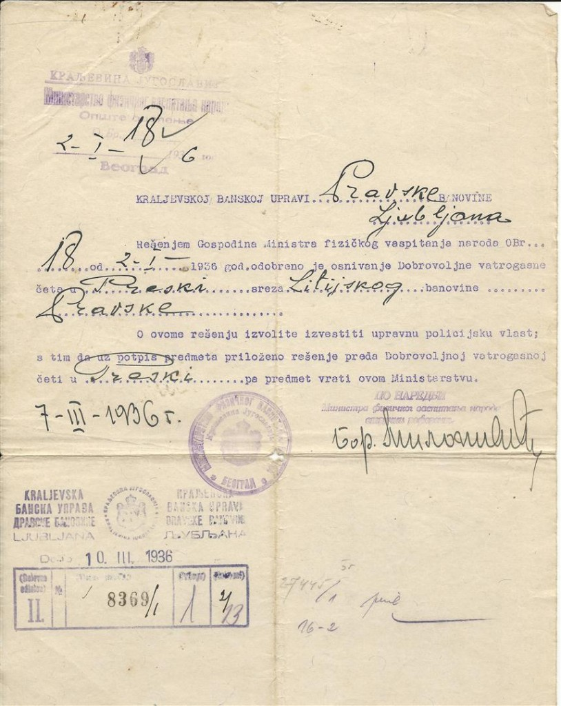
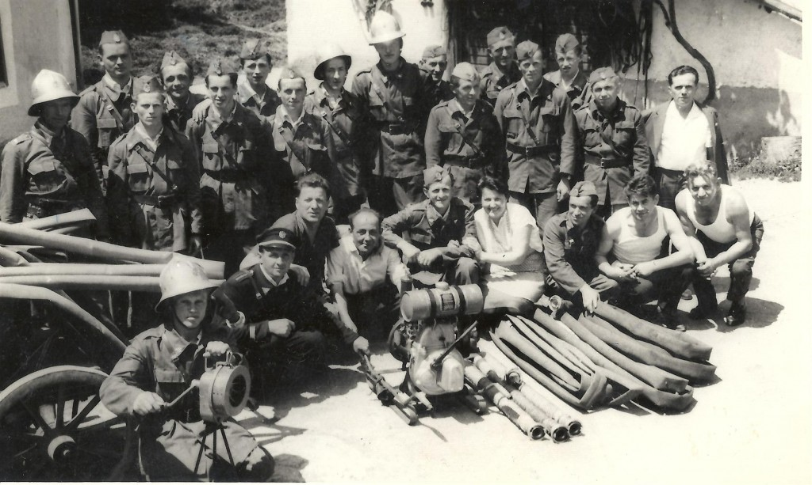

RAZVOJ PROSTOVOLJNEGA GASILSKEGA DRUŠTVA DOLE PRI LITIJI 1931-2011
To se je zgodilo po velikem požaru na Veliki Gobi pri Podlogarjevih, ko so bili takratni prebivalci nemočni ob požaru. Takrat so se napredni možje iz okolice odločili, da ustanovijo prvo gasilsko enoto, ki bo v slučaju nesreče priskočila na pomoč. Sedež je bil na Veliki Preski, ta vas pa je takrat pripadala fari Dole. Zaslužen za ustanovitev društva je bil Henrik Sluga z Velike Gobe, skupaj z ostalimi ustanovnimi člani, ki so bili iz vasi Velika in Mala Goba, Preženjskih Njiv in Velike Preske. S prostovoljnimi prispevki ustanovnih članov in ostalih prebivalcev iz okolice so nabavili 2 gasilski brizgalni – »berglavki«, po vaseh so organizirali trojke in tako zaorali ledino gasilskega delovanja v naših krajih. V letu 1935 je strela zopet zanetila požar na Veliki Gobi in gasilci so takrat z dokaj primitivnim orodjem lokalizirali požar in tako obvarovali vas.

Že jeseni istega leta so na občnem zboru društva sprejeli sklep, da bodo sezidali gasilni dom na Preski. Pripravili so material in vse potrebno, do realizacije pa ni prišlo, ker se je prej pričela 2. svetovna vojna.
MED 2. SVETOVNO VOJNO
Takratni predsednik, tovariš Henrik Sluga, je bil izseljen v Nemčijo. S seboj je odnesel ves pisarniški material in arhiv ter ga skrbno čuval. Po končani vojni, leta 1945, je vsega prinesel nazaj domov. A žal je ta arhiv zgorel pri predsedniku Avgustu Sevšku v Dobovici, ki ga je hranil doma. Zgorelo je vse, s štampiljko vred, zato pisnih podatkov o delovanju društva pred vojno ni, omejeni so zgolj na ustne vire.
PO 2. SVETOVNI VOJNI
Leta 1952 je bila organizirana samostojna občina Dole, obstajala je 4 leta, nato so jo priključili Radečam – društvo je bilo registrirano pri okraju Trbovlje, od leta 1958 pa društvo spada k občini Litija. Istega leta so na Dolah odprli matični urad in leta 1960 ustanovili Krajevno skupnost Dole.
V društvo se je včlanjevalo vse več mladih fantov, ki so veliko svojega prostega časa žrtvovali za vaje in usposabljanja, saj je društvo veliko skrb posvečalo preventivi. Vseskozi delavni in aktivni gasilci so skrbeli za nabavo opreme, oblek in predvsem za izobraževanje ter usposabljanje članov. Posamezni člani so bili zadolženi, da skrbijo in opozarjajo krajane na nevarnost požarov, ki lahko nastanejo tudi iz človekove malomarnosti in neprevidnosti. Svoje sposobnosti so dokazovali na tekmovanjih, žal pa pogosto tudi pri gašenju požarov.
Pri Skupščini Občine Litija je bilo Gasilsko društvo Dole uradno registrirano šele leta 1960.

DRUŠTVO DANES
Za vse naše uspešno delo pa je potrebno skupno delovanje gasilskega društva in celotnega kraja ter krajanov. Le s skupnimi močmi lahko namreč največ naredimo na preventivi, vzgoji, izobraževanju, usposabljanju in opremljenosti. Vse to je potrebno za obstoj in razvoj društva ter ohranjanje varnosti vasi in prebivalcev.